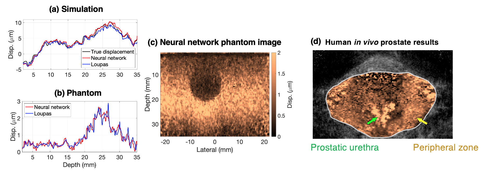

| Paper PDF |

|
Ultrasound tissue motion estimation needs to be rapid and precise (i.e., fractions of a micron) to enable clinical applications such as Doppler blood flow or elasticity imaging. In this work, we implemented a fully convolutional neural network for ultrasound displacement estimation. In simulated and phantom data, the proposed network neural performed similarly well compared to a conventional phase-based displacement estimation algorithm. Application of the trained network to in vivo data enabled the visualization of the prostatic urethra and peripheral zone. Implications for data sampling based on a physical layer analysis are discussed. Namely, full sampling is desirable for accurate displacement estimation if possible, and the introduction of a regularization parameter can simulate the tradeoff between hardware sampling cost and estimation accuracy. |
|
|
| Paper: |
Code:
|